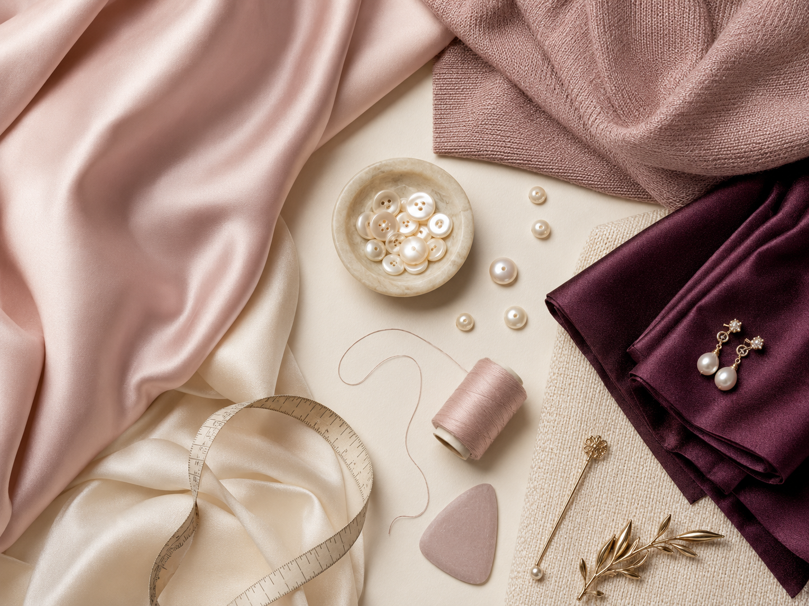

01
01Coral Ease Set
Relaxed colour-block separates for bright everyday dressing.
Ask the journal →THE LOOKBOOK / 2026
Filter by wardrobe role, then adapt each reference to your colours, climate and life.
01Relaxed colour-block separates for bright everyday dressing.
Ask the journal → 02
02Fluid tailoring with a precise shoulder and generous trouser.
Ask the journal → 03
03A sculptural evening silhouette with quiet movement.
Ask the journal →
04Sculptural bags, scarves and jewellery for personal punctuation.
Ask the journal → 05
05A light overshirt that sharpens soft seasonal layers.
Ask the journal → 06
06Textured knitwear balanced by clean cream separates.
Ask the journal →07A vivid single-breasted layer for tonal or neutral looks.
Ask the journal →Clean evening pieces arranged around one saturated colour.
Ask the journal →A compact accessory story built around form and contrast.
Ask the journal → 10
10A long transitional layer with graphic proportion.
Ask the journal → 11
11Comfortable volume, vivid accents and practical movement.
Ask the journal →12Monochrome tailoring lifted by one radiant detail.
Ask the journal →